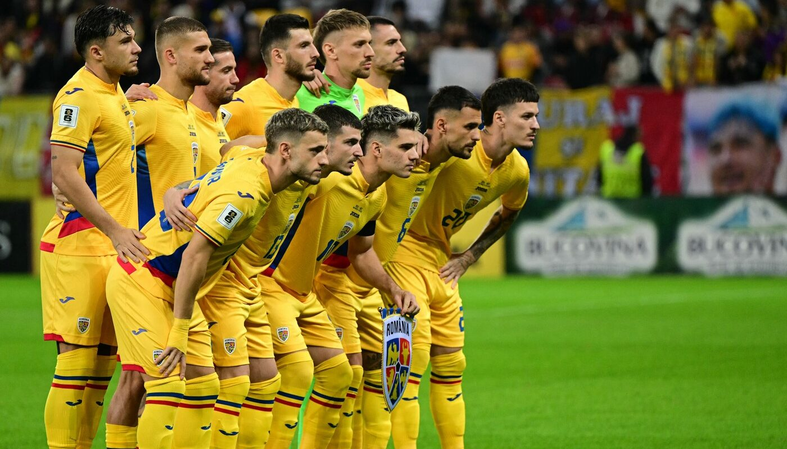
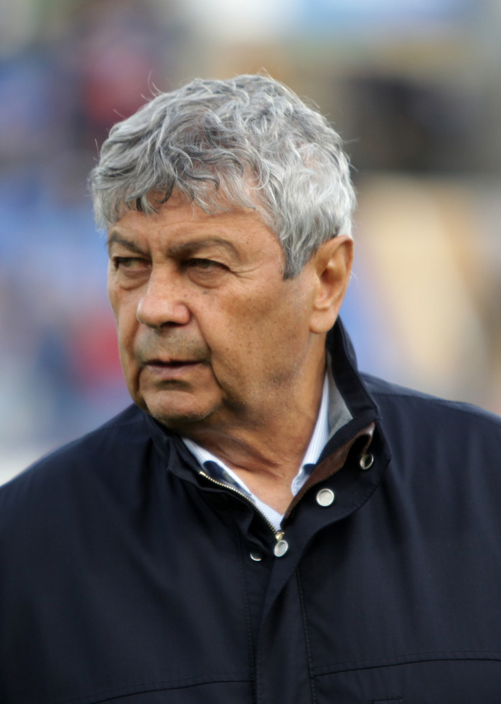

Lotul României
În tabelul de mai jos sunt enumerati jucatorii titulari si realizarile lor în tricoul galben-albastru.
| Jucător | Meciuri | Goluri | Asisturi |
|---|---|---|---|
| Nicolae Stanciu | 82 | 15 | 30 |
| Razvan Marin | 70 | 10 | 25 |
| Andrei Rațiu | 25 | 2 | 12 |
| Nicușor Bancu | 80 | 1 | 4 |
| Ionuț Radu | 10 | 0 | 1 |
| Radu Drăgușin | 27 | 1 | 0 |
| Ianis Hagi | 57 | 20 | 16 |
| Dennis Man | 50 | 14 | 15 |
| Marius Marin | 30 | 7 | 9 |
| Andrei Burcă | 70 | 2 | 0 |
| Daniel Birligea | 12 | 7 | 2 |

Informatii jucator:
Antrenorul României
Mircea Lucescu (n. 29 iulie 1945, București, România) este un antrenor român de fotbal și fost jucător care ocupă funcția de selecționer al naționalei României. Este unul dintre cei mai titrați antrenori din istoria fotbalului.Ca jucător, a activat în principal la echipa Dinamo București între 1964 și 1977, iar ca antrenor a condus printre altele echipa națională a României, precum și echipele Corvinul Hunedoara, Dinamo București, Brescia, Reggiana, Rapid București, Internazionale Milano, Galatasaray, Beşiktaş Istanbul, Șahtar Donețk, Zenit Sankt Petersburg și Dinamo Kiev, iar între anii 2017 și 2019 a fost selecționer al reprezentativei Turciei. În anul 2015, Lucescu a devenit al cincilea om care a antrenat 100 de meciuri în Liga Campionilor UEFA, după Alex Ferguson, Carlo Ancelotti, Arsène Wenger și José Mourinho. Este cel mai în vârstă jucător care a jucat în Divizia A, reușind această performanță la vârsta de 45 de ani, pentru Dinamo, într-un meci împotriva echipei Sportul Studențesc din 16 mai 1990, în care s-a trecut pe foaia de joc și a intrat în minutul 76, driblând astfel suspendarea de trei luni dată de federație pentru folosirea unor jucători convocați la națională.
